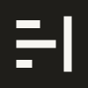
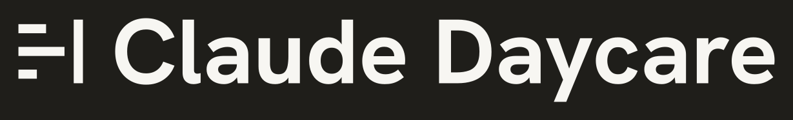
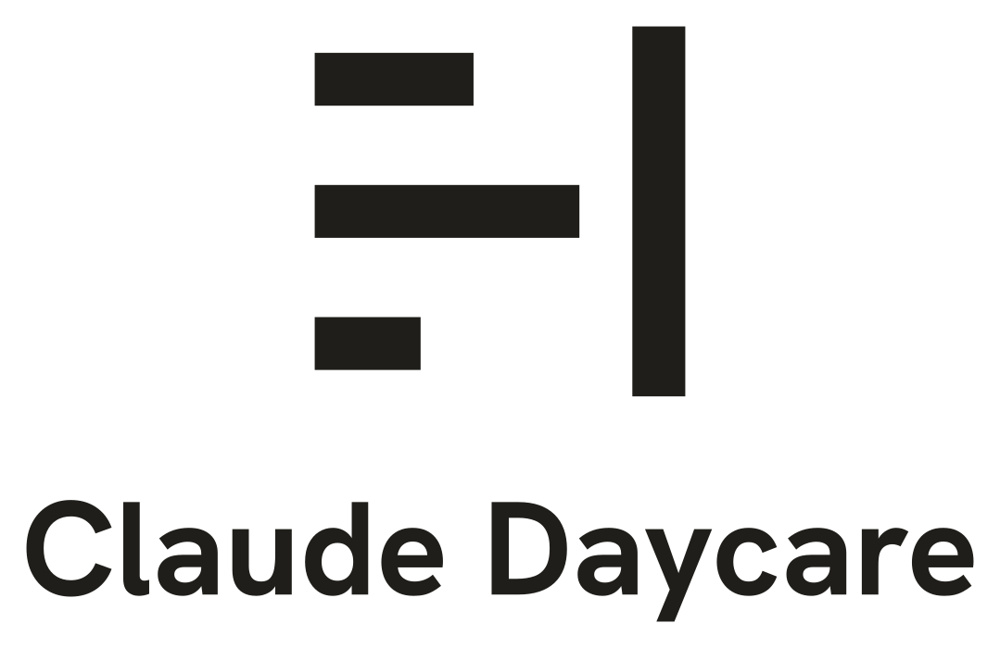
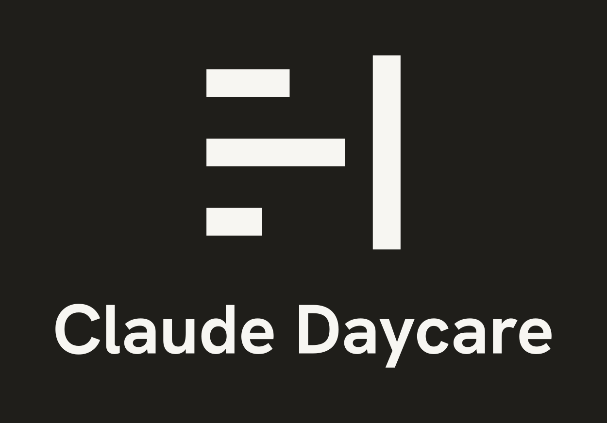
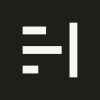
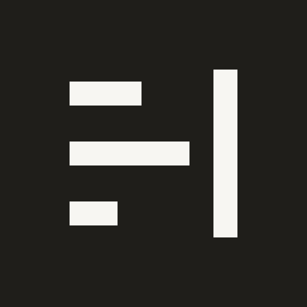
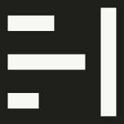

Claude Daycare logo set: every file, on white and on ink
Each row is one file in this folder, drawn from that file. The left cell sits on white (#ffffff), the right on ink (#1f1e1a). Where a version would vanish on a ground (ink on ink, white on white), the cell says so and names the version to use instead. Files marked “on ink” carry their own ink panel, so on the ink ground only their edge disappears. The rules are in LOGO_RULES.md.
Mark alone and square
mark.svgMark alone, ink on light grounds. Transparent, one-cell margin.Invisible on ink by design (ink on ink). Use mark_on_ink.svg.
mark_on_ink.svgNear-white mark on an ink square, one-cell margin. The favicon artwork.
mark_square.svgMark centred in a square with padding (72% scale), transparent, for square slots on light grounds.Invisible on ink by design (ink on ink). Use mark_square_on_ink.svg.
mark_square_on_ink.svgThe padded square mark on an ink square, for square tiles on dark or mixed grounds.
Lockup (mark beside the name)
lockup.svgMark and name in ink, transparent. Headers, documents, slides on light grounds.Invisible on ink by design (ink on ink). Use lockup_on_ink.svg.
lockup_on_ink.svgNear-white lockup on an ink panel with the clear space built in. Dark headers, covers.
Stacked (mark above the name)
stacked.svgMark above the name, centred, in ink. Square or portrait slots, posters, title slides.
Invisible on ink by design (ink on ink). Use stacked_on_ink.svg.
stacked_on_ink.svgNear-white stacked version on an ink panel with the clear space built in.
One-colour versions
mono_black.svgPure black mark on transparent. Black-only print, stamps, photocopies.Invisible on ink by design (ink on ink). Use mono_white.svg.
mono_white.svgPure white mark on transparent. Over photos or any dark ground.Invisible on white by design (white on white). Use mono_black.svg.

lockup_mono_black.svgPure black lockup on transparent. Black-only print, stamps, photocopies.Invisible on ink by design (ink on ink). Use lockup_mono_white.svg.
lockup_mono_white.svgPure white lockup on transparent. Over photos or any dark ground.Invisible on white by design (white on white). Use lockup_mono_black.svg.

Avatar and favicons
avatar.svgSquare social profile picture, vector. Mark at 5/8 scale, inside a circular crop.
avatar-512.pngAvatar as a 512 px PNG for uploads. Shown here square and in a circular crop.
favicon.svgFavicon for browsers that take SVG. Near-white mark on an ink square.favicon-16.pngFavicon, 16 px. Shown at actual size and enlarged 8 times (nearest neighbour).favicon-32.pngFavicon, 32 px. Shown at actual size and enlarged 4 times.favicon-48.pngFavicon, 48 px. Shown at actual size and enlarged 3 times.apple-touch-icon.pngiOS home-screen icon, 180 px. Full-bleed ink square, no transparency.
favicon-192.pngAndroid and web-app icon, 192 px.favicon-512.pngWeb-app icon, 512 px. Shown at half size.favicon.icoLegacy favicon file with 16, 32 and 48 px inside. Shown as your browser draws it.Smallest sizes, drawn at actual size
The mark alone at 16, 24, 32 and 48 px, and the lockup with a cap height of 14 px (the smallest recommended) and 28 px. A high-density screen will draw these sharper than a 1x screen does.
mark.svgMark box 16, 24, 32, 48 pxlockup.svgCap height 14 px and 28 px